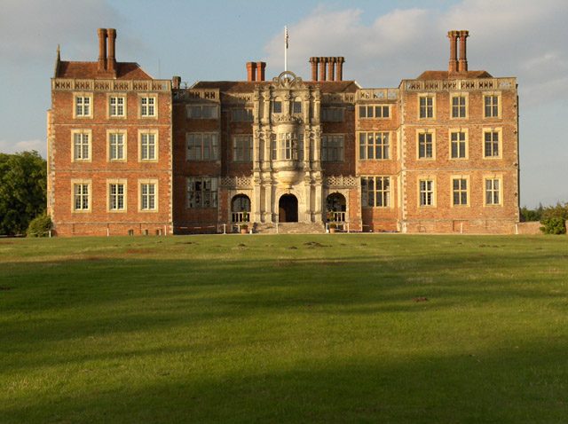

This November is wikipedia Asian month.
Join the contest and win a postcard from
asia.
Bramshil House
From Wikipedia the free Encylopedia

Bramshill House,in Bramshill,northest hamshire, England,
is one of the largest and most important Jacobean prodigy house
mansions in England. It was built in the early 17th century by
Baron Edward La Zouche of Harringworthbut was partly
destroyed by fire a few years later. The design shows the
influence of theItalian Renaissance,which became popular in
England during the late 16th century. The house was designated
a Grade 1 listed building in 1952.